02_main_play.pngMain menu, Prehraj selected
02_main_play.pngMain menu, Prehraj selected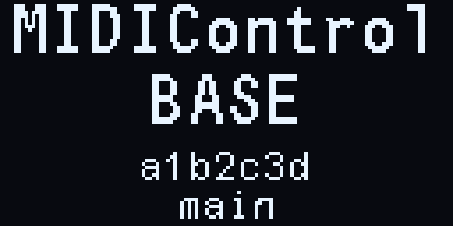
01_splash.pngSplash after power-on: closes by itself after 3 s; once a key was pressed it stays until Enter (Up/Down alone do not close it)02_main_play.pngMain menu, Prehraj selected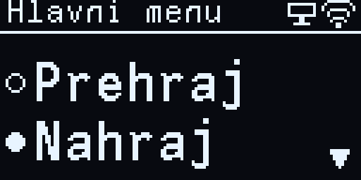
03_main_record.pngMain menu, Nahraj selected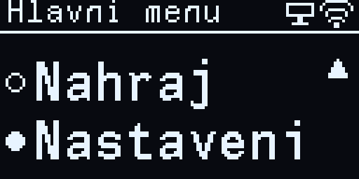
04_main_settings.pngMain menu, Nastaveni selected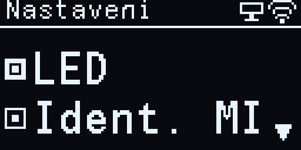
05_settings_led.pngSettings: LED (checkbox)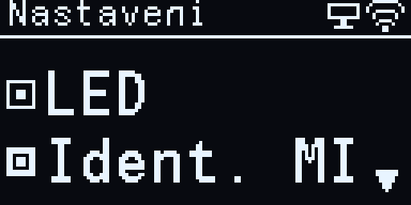
06_settings_midi.pngSettings: Ident. MIDI (checkbox)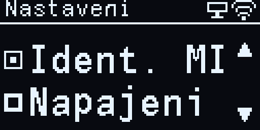
07_settings_power.pngSettings: organ power (checkbox, off)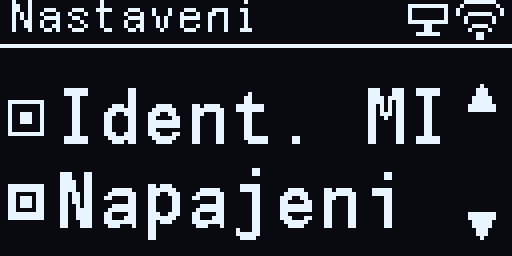
08_settings_power_on.pngSettings: organ power on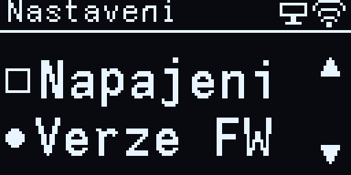
09_settings_firmware.pngSettings: Verze FW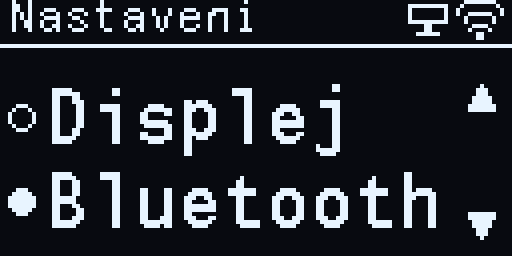
11_settings_bluetooth.pngSettings: Bluetooth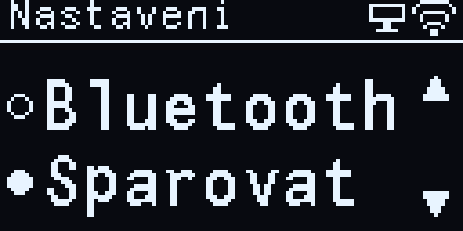
12_settings_pair.pngSettings: Sparovat ovladac 13_settings_pair_scrolled.pngSettings: long item scrolled
13_settings_pair_scrolled.pngSettings: long item scrolled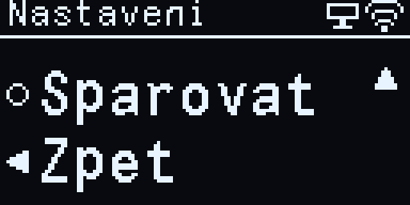
14_settings_back.pngSettings: Zpet (back) 15_info_firmware.pngFirmware info
15_info_firmware.pngFirmware info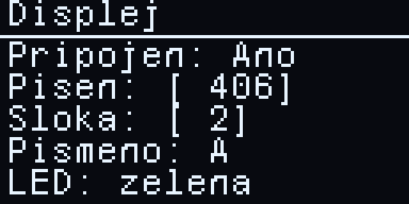
16_info_display.pngSong display info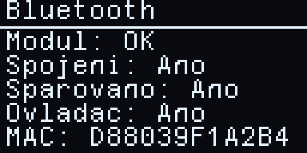
17_info_bluetooth.pngBluetooth info 18_pairing_search.pngPairing: searching for the remote
18_pairing_search.pngPairing: searching for the remote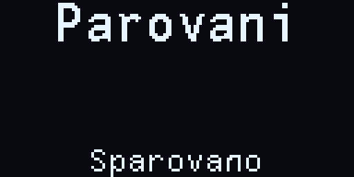
19_pairing_done.pngPairing: paired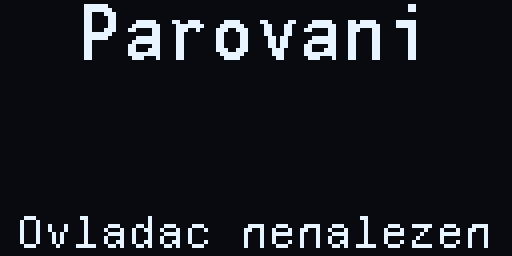
20_pairing_not_found.pngPairing: remote not found 21_songs_loading.pngSong list, loading
21_songs_loading.pngSong list, loading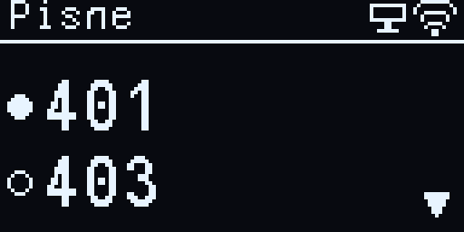
22_songs_first.pngSong list, first entry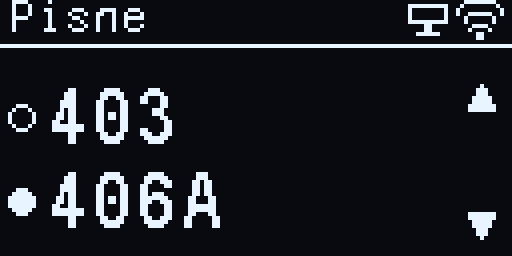
23_songs_middle.pngSong list, middle 24_songs_last.pngSong list, end (Zpet)
24_songs_last.pngSong list, end (Zpet) 25_songs_timeout.pngSong list, PC does not answer
25_songs_timeout.pngSong list, PC does not answer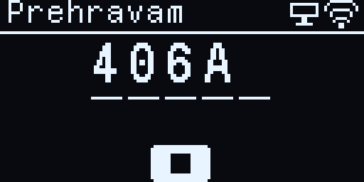
27_now_playing.pngNow playing, no section yet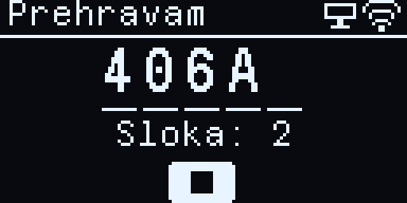
28_now_playing_anchor.pngNow playing, section from the PC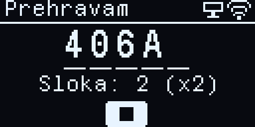
29_now_playing_repeats.pngNow playing, two repeats of the verse left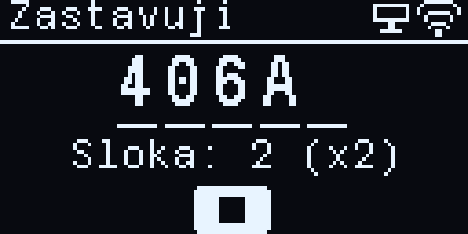
30_now_playing_stopping.pngNow playing, OK pressed: stopping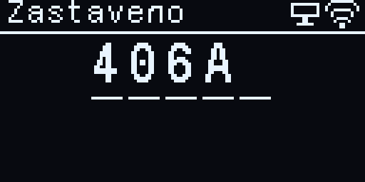
31_now_playing_stopped.pngNow playing, stopped (shown for a moment)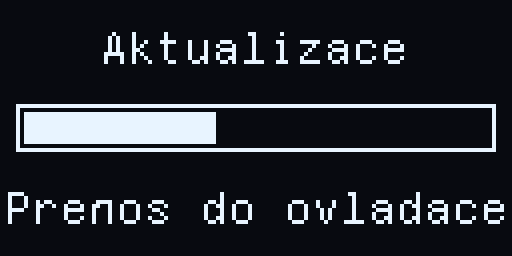
32_fw_remote_update.pngRemote firmware update relayed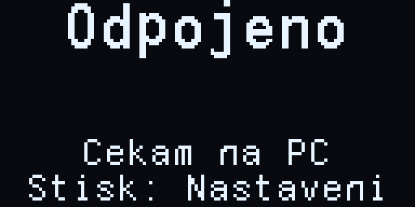
33_no_pc.pngPC not connected: overlay over the main menu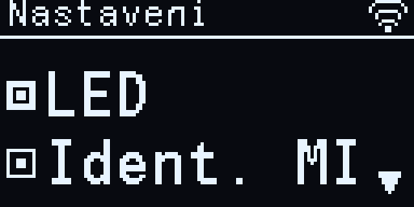
34_no_pc_settings.pngPC not connected: Nastaveni opened from the overlay 35_no_pc_pairing.pngPC not connected: pairing from Nastaveni
35_no_pc_pairing.pngPC not connected: pairing from Nastaveni 36_no_pc_back.pngPC not connected: Zpet returns to the overlay
36_no_pc_back.pngPC not connected: Zpet returns to the overlay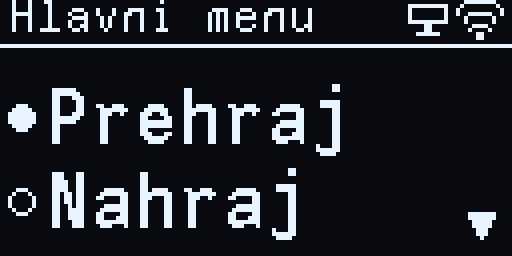
37_pc_back.pngPC connected again: main menu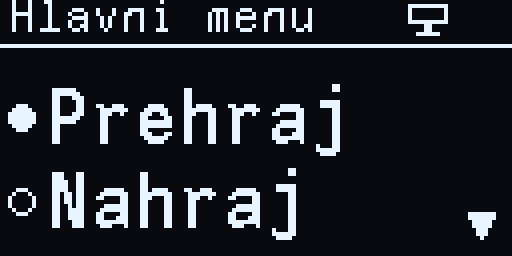
38_status_no_remote.pngMain menu, remote not connected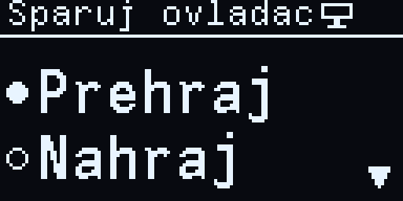
39_main_unpaired.pngMain menu, no remote paired yet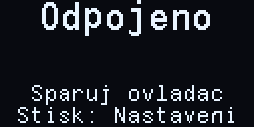
40_no_pc_unpaired.pngPC not connected, no remote paired yet: the overlay carries the hint